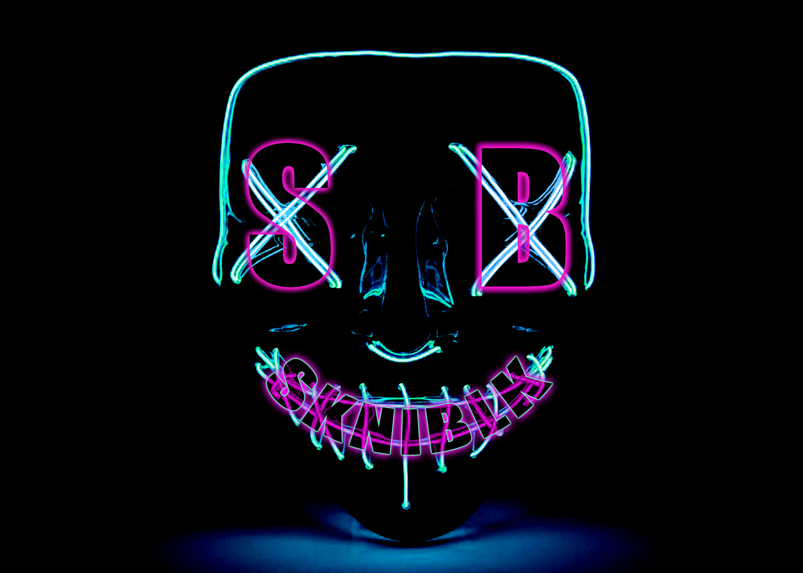
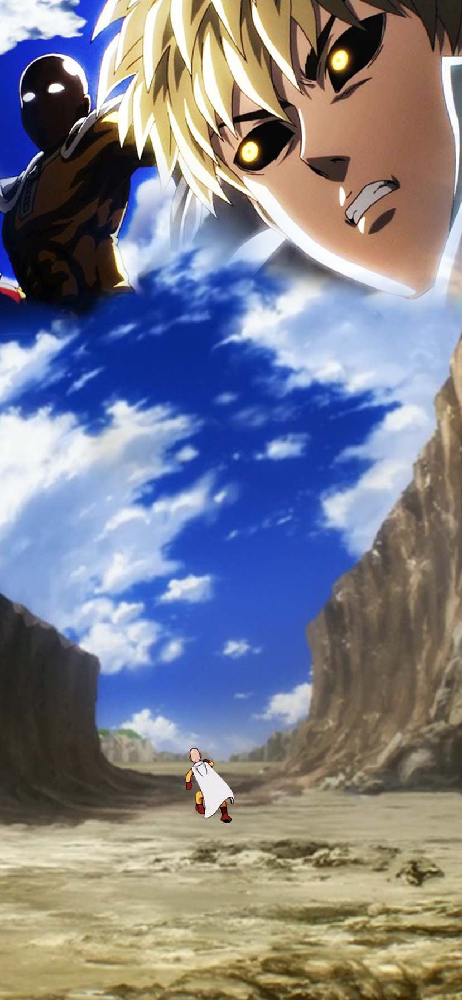

Fire Foot Sanji

This is a project I made in photoshop in 2018. Sanji Vinsmoke is one of my favorite characters in an anime called One Piece. I decidedto try and make a cool looking design for a character that I love!
Comeback

This project is called Comeback because I took a hiatus after my Photoshop class from my junior college. I stopped practicing so I decided to make myself a background for my laptop to get "back in the game." It was difficult at first but I ended up geting back in my old rhythm.
Anime Mashup

After I made my background for my laptop, one of my best friends asked me if I could also make him one. Of course I said yes and I made about 6 different copies and he was finally happy with this final result.
The Red King

This is currently the backgroound I use for my phone screen. Shortly after I made the laptop background. I always had cool anime backgrounds so I figured I would make my own. I made it using a water overlay to create a texture over the character along with a custom paintbrush for the stars.
The King of the North

This is one of my first Photoshop projects that I produced for a class of mine. I had to use certain techniques and put my own spin on it. I decided to do a John Snow poster because he is one of the greatest characters in all fiction. This project is a tribute to the greatness of John Snow.
Vongola Decimo

This project is a dedication to one of my favorite characters in all anime. This is a show that many people do not know about so I wanted to try and capture how cool he and the show is!
Broken Background

This piece is an art style known as Glitch Art. I created the intial image on Photoshop (the image to the left) and then took that photo and put it in an audio program called Audacity. I messed with the properties in audacity then exported it back to an image and this was the result.
EDM Logo
Like the image to the left, this is for my best friend who is aspiring to be am EDM DJ. He asked if I could make him a logo and he said I had complete creative control. I made this along with several other color waves.
Walk of Humor
This is another phone background that I made but it was for my brother. One of his favorite anime is One Punch Man so he asked if I could recreate this scene of him walking away comically after defeating his pupil. The two characters in the sky are a masking technique to blend them in the clouds.
A's All Stars

Here is a piece that I made for another friend of mine. He is a die hard A's fan and wanted me to make him a backgrounf for his laptop. I created this piece using many different layer styles along with a smoke pattern overlay. I am also an A's fan myself so I was happy to do the project.